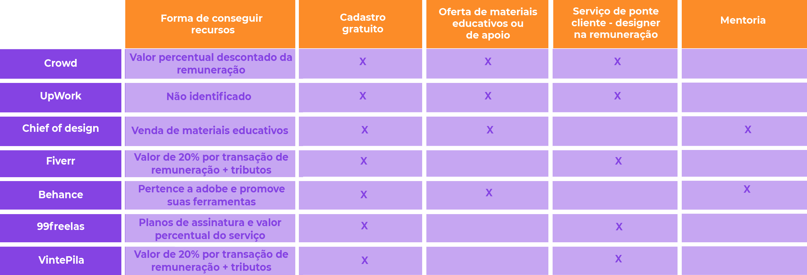
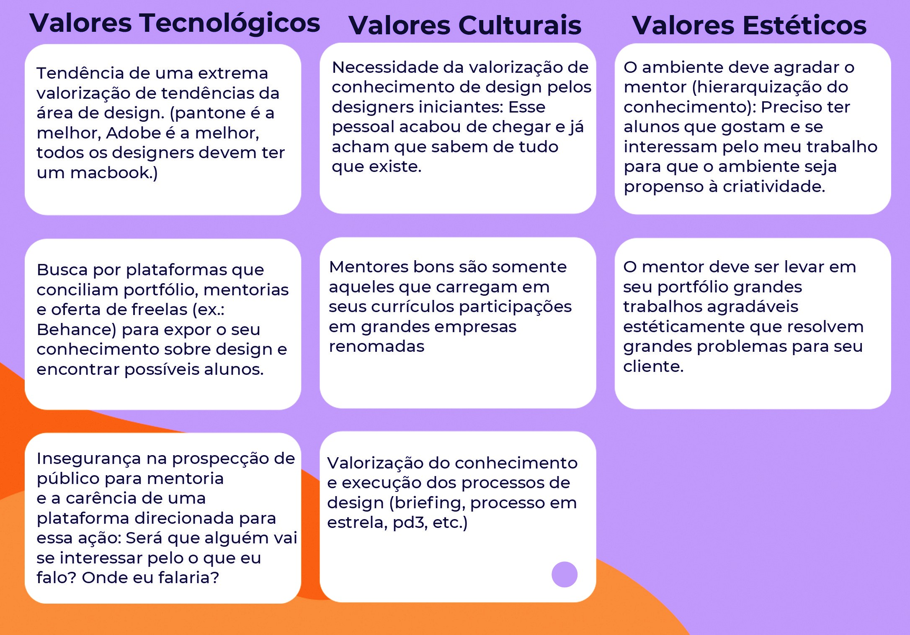
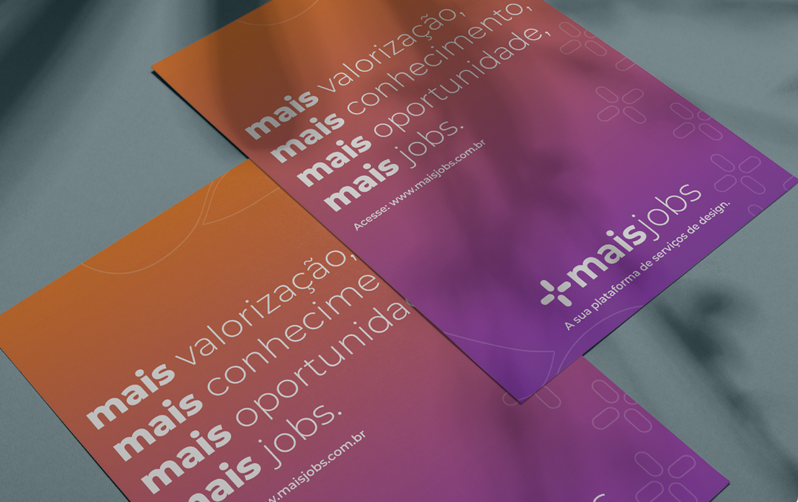
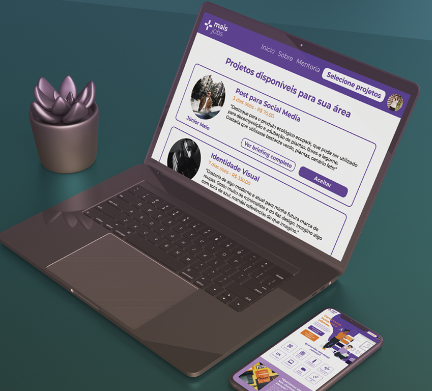

Mais Jobs
Como o UX Design foi utilizado para ajudar designers iniciantes em sua inserção no merdado de trabalho
O Mais Jobs foi desenvolvido na cadeira de Projeto Integrado II 2020.2 no curso de Design Digital na Universidade Federal do Ceará. Este projeto foi feito em parceria com Lethissia Souza e Beatriz Sgobi. Nós optamos por trabalhar com oportunidade de marcado.
Contexto
Em um mercado de trabalho extremamente competitivo, designers iniciantes se vêem em desvantagem uma vez que não conseguem encontrasr clientes, pois não tem um currículo bem consolidado e atraente. Ao mesmo tempo, eles não dominam aspectos como gestão de custos, organização e trabalho autônomo. Por outro lado, há uma demanda de empresários e comerciantes que precisam de serviços de design, porém sentem dificuldade na hora de contratá-los.
Problema
A difícil inserção de designers iniciantes no mercado de trabalho, tendo em vista que é uma área que necessita de experiência para conseguir uma oportunidade de trabalho. Além disso, designers iniciantes relatam dificuldades em organizar-se e calcular sua remuneração, sugerindo uma necessidade de mentoria na introdução ao mercado de trabalho.
Objetivo
Desenvolver um sistema que a intermediação entre designers e clientes, visando ajudar o cliente a descomplicar o processo de contratação de serviços de design e, ao mesmo tempo, possibilitar uma inserção de designers iniciantes no mercado de trabalho por meio de mentorias.
Público Alvo
A solução atende dois públicos:
- Designers que possuem superior incompleto/completo em cursos relacionados à design e pouca ou moderada experiência na área.
- Empresas ou pessoas que procuram serviços de design com excelente custo-benefício e fácil contratação.
Personas


Benchmarking
Pesquisa quantitativa
Questionário voltado para empresas que desejam contratar designers
As perguntas do questionário foram elaboradas a partir do que se era desejado saber em relação a contratação de designers. No questionário conseguimos obter dados importantes, como o fato de empresários acharem difícil fazer essa contratação. Além disso, essas informações nos fez entender melhor como funciona o processo de contratação dos mesmos.
Pesquisa qualitativa
Grupo Focal com desginers iniciantes
As perguntas do grupo focal foram elaboradas a partir do que se era desejado saber em relação a inserção dos designers no mercado de trabalho. A entrevista com o grupo foi feita com intenção de confirmar suposições e dúvidas da matriz CSD. A partir desse método, obtivemos informações riquíssimas, como por exemplo, que há uma grande dificuldade por parte dos designers em calcular o preço que devem cobrar. Além disso, também entendemos como funciona o processo de prospecção de clientes e o fluxo de "freelas" de cada um deles.
Estratégia de design - tempo atual

Estratégia de design - designers

Estratégia de design - empresários

Estratégia de design - mentores
Protótipo de alta fidelidade


Teste de usabilidade
O Teste de Usabilidade pede que o usuário realize tarefas pré-determinadas pelos avaliadores de forma presencial. Ele foi realizado com duas pessoas que possivelmente estão enquadradas no perfil de usuário.
Tarefa 1: contratar o serviço de criação de flyer.
Tarefa 2: se cadastrar como ilustrador e designer ux.
Tarefa 3: acessar perfil do designer.
Tarefa 4: aceitar projeto de identidade visual.
Validação: Pedir ao usuário para confirmar o valor e os dias úteis do projeto.
Tarefa 5: verificar o extrato da conta +Jobs.
Validação: Pedir ao usuário para confirmar o valor disponível na conta.
Tarefa 6: contratar uma mentoria exclusiva.

Resultado da primeira avaliação:
Os usuários 1 e 2 conseguiram realizar as tarefas de 2 á 5 com a melhor quantidade de cliques possível, isso quer dizer que eles conseguiram realizar sua tarefa facilmente, não precisando dar voltas no site ou clicar mais do que o necessário.
Na tarefa 1, o usuário 1 clicou mais de uma vez na área “design gráfico” pois não percebeu que as opções estavam logo abaixo. Por estar dentro da quantidade razoável de cliques e ser um problema isolado - pois o usuário 2 não fez o mesmo -, compreendemos que pode ter sido de falta de atenção do usuário.
Na tarefa 6, os usuários 1 e 2 atingiram a pior quantidade de cliques, o que tornou perceptível a necessidade de haver uma mudança na parte da mentoria. Nessa tarefa, eles tentaram selecionar uma das opções de mentoria, entretanto como este campo não estava selecionável, eles excederam a quantidade de cliques
Para solucionar isso, atualizamos o produto e o problema foi corrigido, o campo se tornou selecionável de forma que o usuário consegue selecionar o tipo de mentoria desejada.
Antes e depois

Leia o resultado completo do teste de usabilidade
Aplicações da marca
 
Conclusão e aprendizados
Foi incrível desenvolver esse projeto com essa equipe tão querida. Aprendemos e crescemos muito. Foi enriquecedor estudar esse problema que é tão real para jovens designers, que assim como eu, estão na fase de inserção do mercado de trabalho.